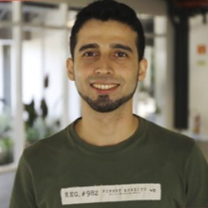

Olá, meu nome é Eduardo. Tenho experiência como desenvolvedor de software, atuando em diversos projetos em ambientes corporativos e acadêmicos.
Ao longo da minha jornada, explorei várias áreas da engenharia de software e descobri minha paixão por Garantia de Qualidade (QA), que se tornou minha principal habilidade. Com o tempo, foquei na implementação de diferentes tipos de testes — automatizados, exploratórios, carga e regressão — contribuindo para o sucesso de projetos de diferentes complexidades.
Minha abordagem é marcada por muita organização e por buscar código limpo e legível, sempre priorizando clareza.
Além disso, sou músico e a bateria é meu instrumento — algo que reflete minha paixão por disciplina e ritmo, não só na música, mas também no desenvolvimento de software.
Ver CurrículoSovis
ago de 2025 - o momento · 6 meses | Brasil · Remota
Join Ads Network
out de 2024 - jun de 2025 · 9 meses | Foz do Iguaçu, Paraná, Brasil · Presencial
Dediquei meus esforços para implementar melhorias no processo de desenvolvimento. Como QA, apoiei a equipe de desenvolvimento ajudando na cobertura de testes unitários e na automação de testes E2E utilizando o Robot Framework. Auxiliei o time na configuração das pipelines de CI/CD, integrando os testes ao processo, de modo que a cada nova versão os testes fossem executados para validar as implementações. Implementei uma estrutura mais organizada para a esteira de desenvolvimento, incluindo práticas voltadas à garantia da qualidade do software entregue ao cliente. Criei testes E2E com o Robot Framework e testes unitários utilizando o PestPHP. Durante esse período, também atuei na criação de documentações para apoiar os processos da equipe.
Competências: Testes automatizados de software · Qaops · Gestão de documentos · TesteCafe · Robot Framework · Atenção a detalhes · PHPUnit · PHP
Join Ads Network
set de 2024 - nov de 2024 · 3 meses | Foz do Iguaçu, Paraná, Brasil · Presencial
Atuando no desenvolvimento de features para diversos projetos internos, utilizando práticas de TDD para garantir a qualidade do código desde o início. Colaborando com o time na implementação de melhores práticas, promovendo a cultura de qualidade de software que desenvolvi ao longo dos anos. Contribuo com codereview, buscando aprimorar a consistência e eficiência do desenvolvimento, além de garantir a entrega de soluções de alta qualidade.
Competências: Desenvolvimento de software · Gestão de documentos · Laravel · Sistemas operacionais · Atenção a detalhes · TDD · PHP
Clinicorp Solutions
out de 2023 - set de 2024 · 1 ano | Jaraguá do Sul, Santa Catarina, Brasil · Híbrida
Contribuindo para a Clinicorp, uma empresa que desenvolve um sistema abrangente de gerenciamento clínico e estético, otimizando as operações diárias de clínicas, desde o agendamento de pacientes até a gestão financeira. A empresa conta com aproximadamente 300 colaboradores. Minhas atribuições iniciam nos times como QC (Controle de Qualidade), onde desempenho um papel fundamental nos estágios iniciais dos processos de desenvolvimento. Agrego valor ao produto e ao custo do projeto ao garantir a qualidade desde o início. Além disso, atuo como QA (Garantia de Qualidade), validando o processo de entrega das demandas das equipes. Trabalhando em várias equipes, utilizo estratégias como Kanban e Scrum para gerenciar eficientemente as atividades do dia a dia. Realizei automação para testes E2E, tanto para front-end e back-end e mobile, utilizando Robot Framework. Este esforço concluiu com o aumento da eficiência e a qualidade nos processos de desenvolvimento.
Competências: Execução de testes · Kanban · Testes exploratórios · Scrum · Gestão de documentos · Xray · BDD · React.js · Garantia de qualidade · JIRA · Robot Framework · Comunicação · Cypress.io · Automação de testes · Assistência ao produto · Gherkin · Node.js
LIVE!
ago de 2023 - out de 2023 · 3 meses | Jaraguá do Sul, Santa Catarina, Brasil · Presencial
Trabalhei na Live!, uma empresa especializada em produtos têxteis voltados para moda fitness. Durante minha atuação presencial com uma equipe de desenvolvimento composta por 6 membros, utilizei metodologias ágeis como Scrum e Kanban para alinhar e organizar as demandas durante as sprints. Minhas responsabilidades eram centradas no desenvolvimento de funcionalidades cruciais para o sistema interno da fábrica. O projeto envolvia o uso de React para o frontend e Java para o backend, incluindo a criação de scripts SQL para consultas ao banco de dados. Ao colaborar com colegas de trabalho, obtive valiosos aprendizados, contribuindo também com experiências anteriores em outras empresas. Destaco a aplicação de boas práticas de versionamento de código utilizando Git, enriquecendo ainda mais meu conhecimento e habilidades.
Competências: Kanban · Oracle SQL Developer · Desenvolvimento de software · Scrum · React.js · Sistemas operacionais · Comunicação · Java
Parque Tecnológico Itaipu - Brasil
set de 2021 - nov de 2022 · 1 ano 3 meses | Foz do Iguaçu, Paraná, Brasil
Trabalhei no Parque Tecnológico de Itaipu, uma empresa com diversas áreas de atuação, principalmente voltada para a inovação. Minha atuação foi no laboratório GE.DT, com responsabilidades em projetos de energia. Entre minhas atividades, estavam a execução de atividades técnicas sob orientação, assistência técnica para desenvolvimento de projetos e pesquisas, manutenção de equipamentos e instalações, apoio na compra e utilização de máquinas, produtos e equipamentos, participação em programas de pesquisa, fiscalização e inspeção das atividades, elaboração de projetos, realização de procedimentos necessários para instalação e manutenção de máquinas e equipamentos, elaboração e atualização de instruções de procedimentos e normas, além do atendimento ao público interno e externo. Durante o meu tempo na empresa, tive a oportunidade de criar e atualizar a documentação de um projeto que envolvia as estações de produção de energia. O objetivo desse projeto era monitorar e criar alertas dos disjuntores das estações com base nos parâmetros inseridos no sistema. A arquitetura do sistema consistia em um projeto MVC, construído em Java e PrimeFaces. Também reportava aos engenheiros da Itaipu, em reuniões quinzenais, os progressos solicitados pela equipe de engenheiros da Itaipu, mantendo-os atualizados sobre o desenvolvimento do projeto.
Competências: Kanban · Primefaces · Metodologias Agile · Hyper-V · Desenvolvimento de software · Scrum · Java Architecture for XML Binding · Agendamento de reuniões · MySQL · Testes · Atas · Comunicação · Servidor Windows · Implementação de software · Java
IbiJus - Instituto Brasileiro de Direito
mai de 2021 - set de 2021 · 5 meses | Remota
Trabalhei na Ibijus, uma empresa do ramo de direito que oferece cursos profissionalizantes e conta com uma equipe de 50-100 funcionários. Minhas atribuições eram focadas na implementação e manutenção dos testes na plataforma. Comecei criando e documentando testes exploratórios na plataforma, mapeando todos os cenários de testes. Em seguida, implementei um processo de teste, correção e re-teste, que consistia em gerenciar todo o processo da correção desde o reporte de usuários ou pela equipe de QA, passando pelo time de desenvolvimento para correção e teste para validar a correção. Também ajudei a equipe na implementação da integração contínua do sistema e participei de reuniões de disseminação de conhecimento, realizadas a cada 15 dias, com o objetivo de trocar informações, conquistas, códigos e curiosidades. Além disso, participei de reuniões de alinhamento entre as equipes e utilizei metodologias ágeis como Scrum e Kanban. Minha atuação na empresa também incluiu auxiliar o time com UX e, com excelência, pude contribuir com a empresa nos processos de Qualidade de Software, conquistando a cobertura das funcionalidades do sistema, desde os testes exploratórios até os testes automatizados. Uma das minhas conquistas foi a implementação do processo de mapear e gerenciar os reportes de bugs encontrados.
Competências: Git · Testes manuais · Kanban · Metodologias Agile · Integração contínua · Testes exploratórios · DBeaver · Scrum · Planejamento de testes · JavaScript · Garantia de qualidade · Atenção a detalhes · Comunicação · Cypress.io · Automação de testes
IntellTech Tecnologias Inteligentes
abr de 2019 - jan de 2021 · 1 ano 10 meses | Foz do Iguaçu e Região, Brasil
Trabalhei na IntellTech, uma empresa que oferece soluções para gerenciamento de barragens, um sistema modular com várias funcionalidades e uma equipe de 50-100 funcionários. Minha responsabilidade principal era implementar e manter os testes na plataforma. Atuando no time de QA, fui responsável por criar e documentar cenários de testes para mapear as funcionalidades do sistema, incluindo testes de carga e caixa-preta e caixa-branca. Além disso, utilizei os aplicativos da Microsoft para gerenciar e documentar os bugs encontrados no sistema e criei testes automatizados usando o Selenium. Participei de reuniões entre equipes para disseminar conhecimento do sistema e planejamento de sprints. Também auxiliei na correção de bugs, garantindo a qualidade do sistema. Em resumo, minha contribuição na IntellTech ajudou a garantir uma cobertura completa de testes, desde testes exploratórios até testes automatizados, e colaborou para o crescimento da empresa.
Competências: Testes manuais · Execução de testes · Kanban · C# · Metodologias Agile · Testes de carga · Testes com Selenium · Selenium · Scrum · Documentação de software · Planejamento de testes · Testes · Garantia de qualidade · Atenção a detalhes · Comunicação · Documentação de usuário · Automação de testes · Testes funcionais · Microsoft 365